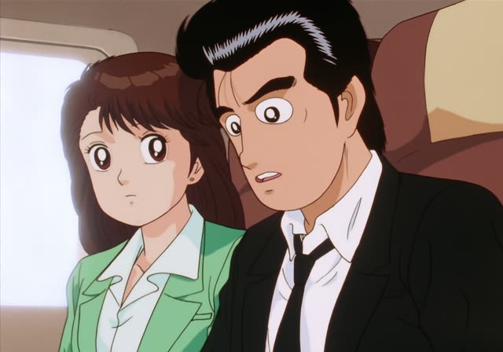
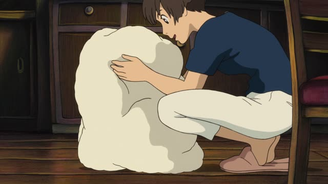
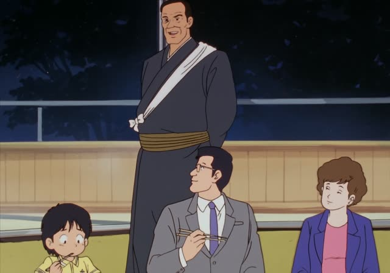
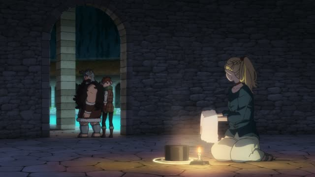
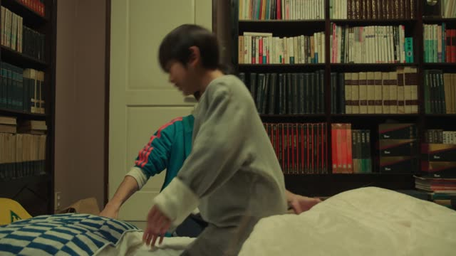
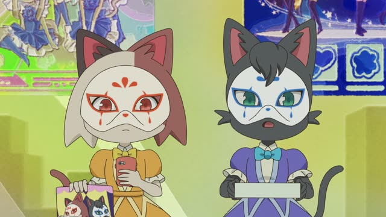
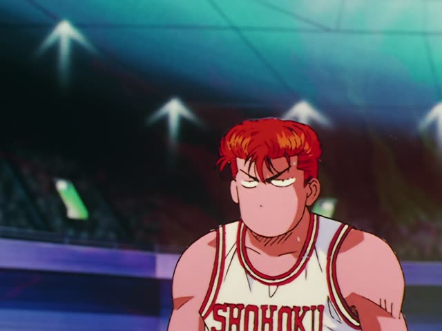

～たまま

Oishinbo · Episode 49
木につけたまま、ここまで熟させたんですよ。
"I let them ripen this far, still on the tree."
～たまま means "with it still that way": you did something, it stays like that, and the next thing happens anyway. た-form + まま: つけたまま, 着たまま.
On this card, a farmer shows fruit he left on the branch until it was fully ripe. ですよ makes it polite.
Before a noun or です, use まま: 開いたままのドア, そのままです.

Ponyo
ほら、ぬれたままじゃダメよ。
"Come on, you can't stay all wet."
On this card, Sosuke's mom dries Ponyo off. ぬれたまま: still wet. じゃダメ: that won't do.
Quick Examples
You fell asleep on the couch.
テレビをつけたまま寝ちゃった。
"I fell asleep with the TV on."
CasualA sign at a temple.
靴をはいたまま入らないでください。
"Please don't come in with your shoes on."
PoliteYour friend left the window open.
窓が開いたままだよ。
"The window's still open."
まま + だ at the end.
CasualOrdering at a café.
氷を入れたままでいいです。
"It's fine with the ice left in."
PoliteWith and without
靴をはいて入った。
"I put on my shoes and went in." Just a sequence.
靴をはいたまま入った。
"I went in with my shoes still on." They should have come off.
Examples from Media

Oishinbo · Episode 4
これも生きたまま天ぷらにします。
"These too go into the tempura still alive."
Kekkon Dekinai Otoko · Episode 3
それ、かぶったままここ来たんすか？
"You came here with that still on your head?"
すか = casual ですか.

Dungeon Meshi · Episode 8
服着たままやれるから。
"I can do it with my clothes on."
Shirokuma Cafe · Episode 35
じゃあ、僕もゴロゴロしたままでいるよ～。
"Then I'll just stay lazing around too."
ままでいる = stay that way.
The Wind Rises
お部屋を散らかしたままなの。
"I left my room all messy."

Quartet · Episode 4
電気はつけたまま。
"Leave the light on."

Odd Taxi · Episode 2
あー、仮面したまま外、恥ずかしっ。
"Ugh, going outside still in a mask, so embarrassing."

Slam Dunk · Episode 43
得点でも流川に負けたまま
"Still behind Rukawa in points too..."